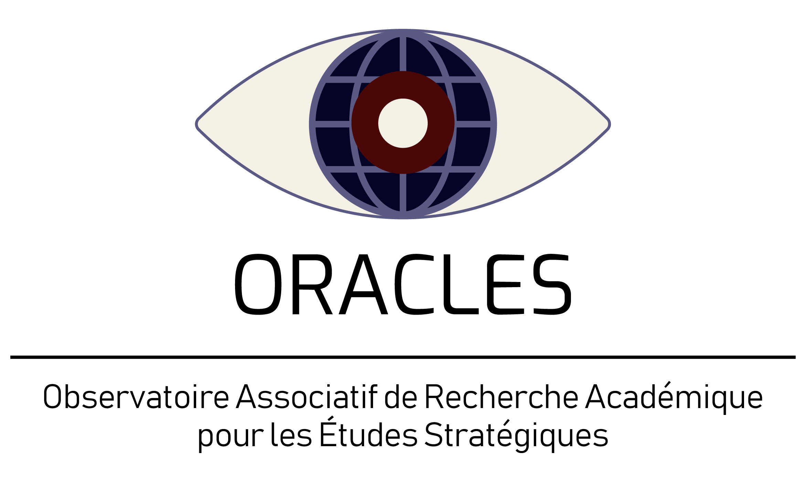

Qui sommes-nous
ORACLES, Observatoire Associatif de Recherche Académique pour les Études Stratégiques, est une association dont l'objectif est de promouvoir la recherche en études stratégiques.
Nos objectifs
- Former à la recherche : méthodes, lecture critique, écriture scientifique.
- Faire produire : proposer aux étudiants de réaliser des travaux dans le domaine et de les publier.
- Outiller : développer des ressources utiles à la recherche et à la décision publique.
Notre signature
Promouvoir, sensibiliser et contribuer à la recherche en études stratégiques.
Statut
Association déclarée, identifiant RNA : W751285944.